RAŠTO DARBO RENGIMAS
Titulinis puslapis (viršelis)
1 žingsnis iš 16
Pasirenkame meniu ‘Įterpimas’
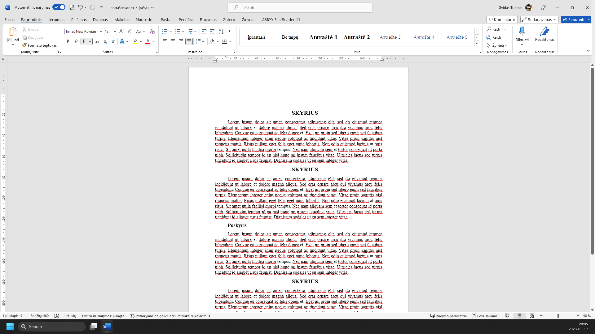
Įrankių juostoje spaudžiame ‘Viršelio puslapis’
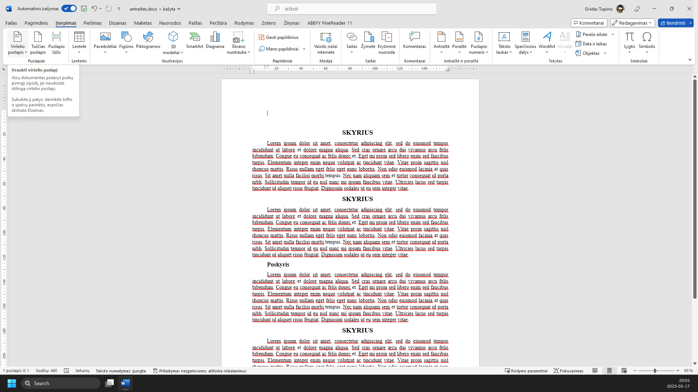
Pasirenkame norimą viršelį
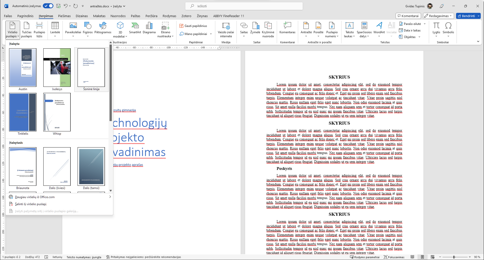
Spaudžiame ant ‘[Dokumento pavadinimas]’ ir įvedame savo projekto pavadinimą
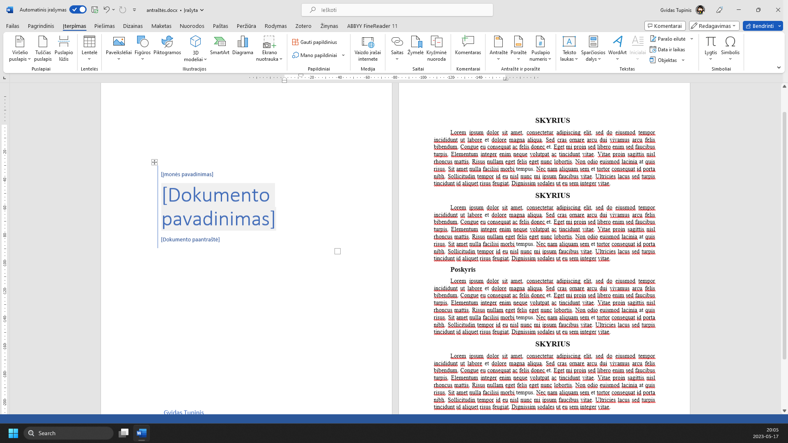
Lauke ‘[Įmonės pavadinimas]’ įvedame mokyklos pavadinimą
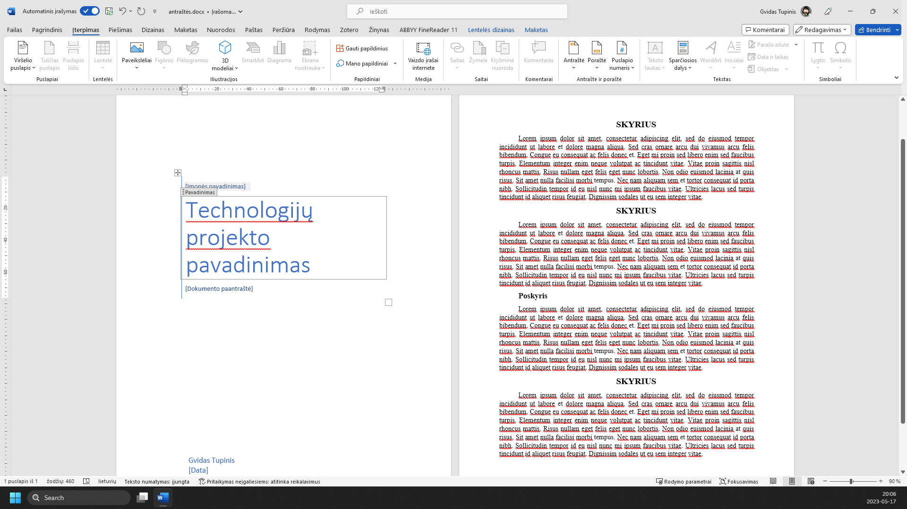
Lauke ‘[Dokumento paantraštė]’ įrašome 'Technologijų projekto aprašas'
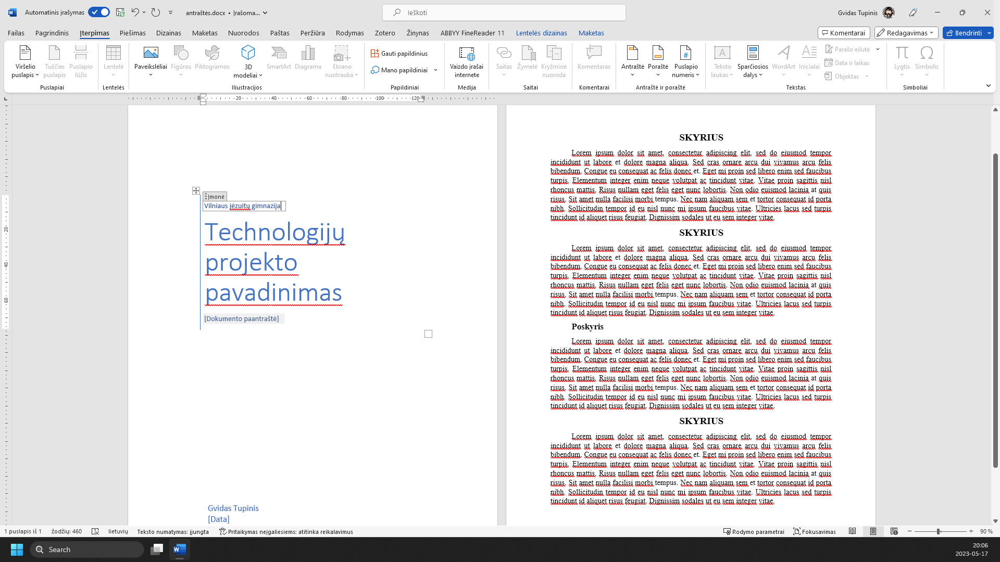
Laukelyje ‘Autorius’ įvedame savo vardą ir pavardę ir klasę
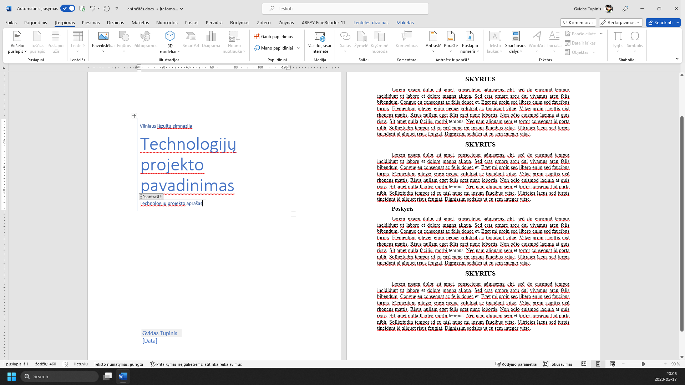
Laukelyje ‘Data’ įvedame '2023, Vilnius'
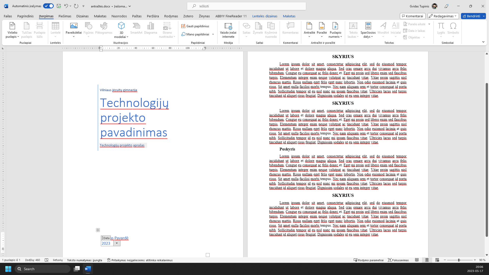
Įrankių juostoje pasirenkame ‘Teksto laukas’
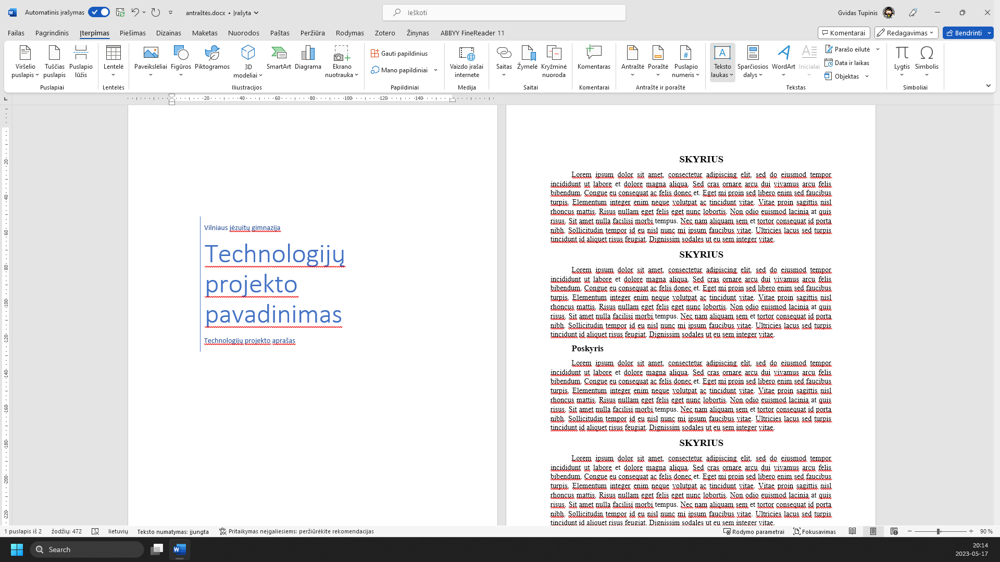
Pasirenkame teksto lauko formatą
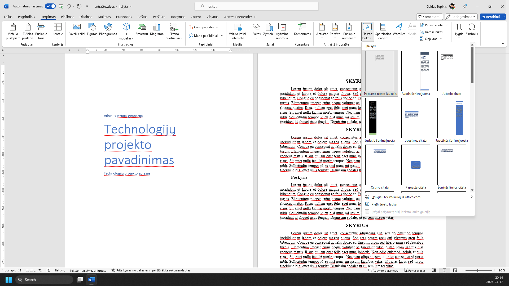
Įterptą teksto lauką padedame ten, kur norime
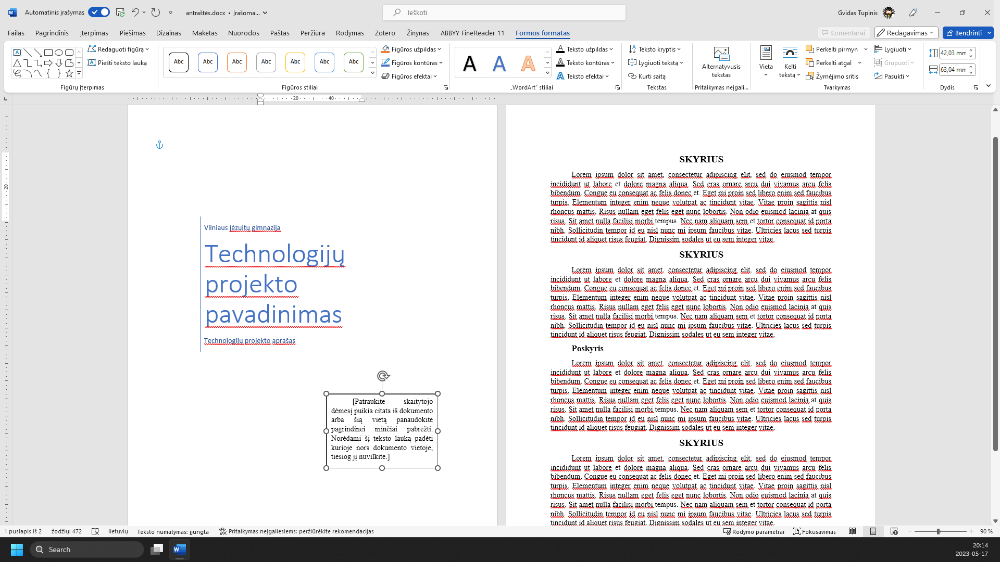
Spustelėkite „2 teksto laukas“
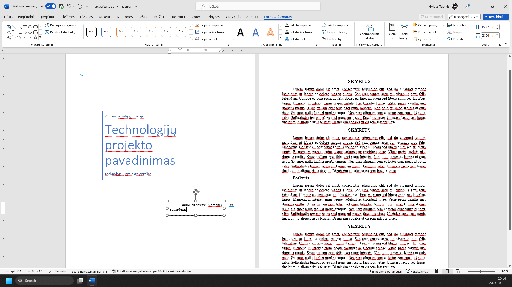
Meniu ‘Formos formatas’
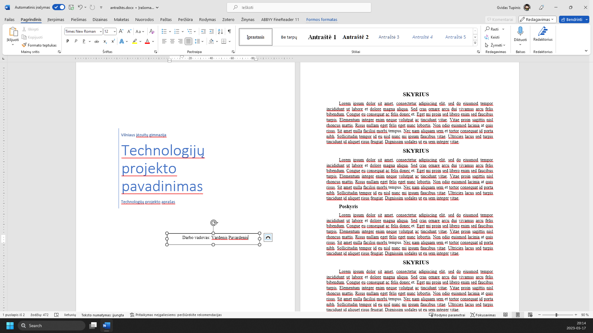
Meniu pasirinkite „Daugiau parinkčių“
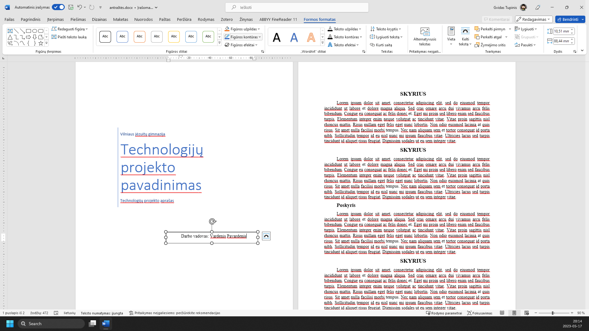
Galime pašalinti teksto lauko kontūrą pasirinkdami ‘Nėra kontūro’
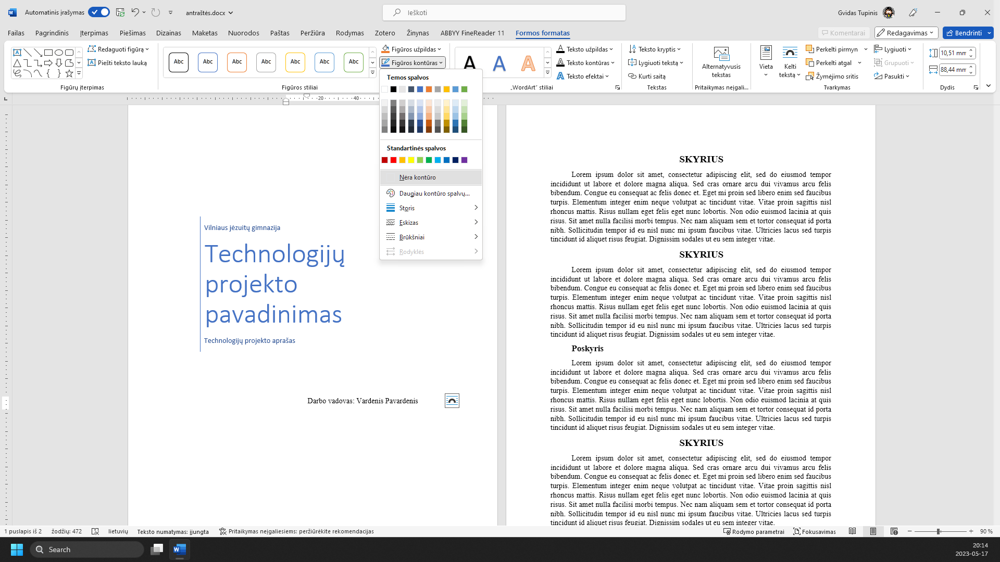
Viršelis sumaketuotas. Galime pakeisti šriftus, stilius ir kitus aktualius aspektus
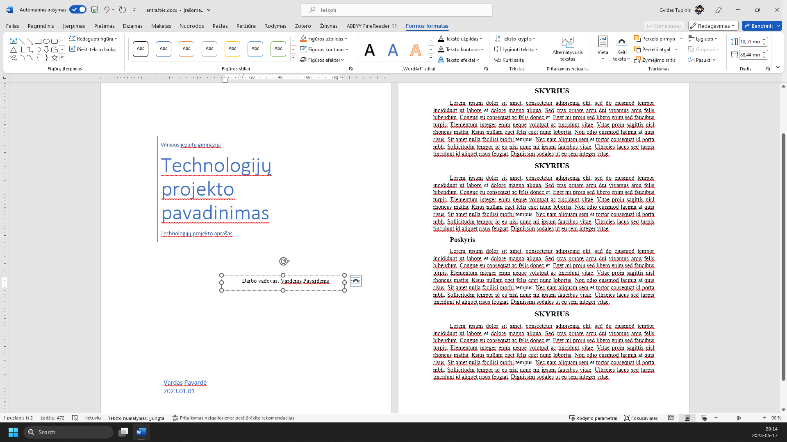
Žaliai apibrėžta vieta rodo, kur paspausti. Vaizdą gali padidinti naršyklės mastelio valdikliu. Žingsnius taip pat keičia klaviatūros rodyklės.